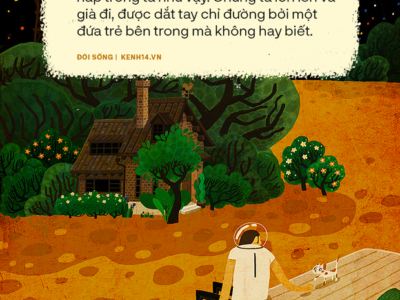
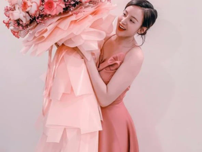
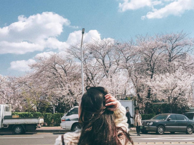

Nhận định
THAY ĐỔI BẢN THÂN MỘT CÁCH NHÂN ĐẠO HƠN
THEO SAGA.VN, 12/10/2020 - 10:00
Thời đại của Kodak không còn nữa, và Fujifilm hiện vẫn phát triển mạnh sau một cuộc cải tổ lớn. Dưới đây là một câu chuyện về sự phát triển của 2 thương hiệu lớn này, để nhằm giúp bạn hiểu được cách thức và lý do số phận của hai công ty tương đồng nhưng lại đi ngược chiều nhau. Vào năm 1975, một kỹ sư tên là Steve Sasson đã giới thiệu một công nghệ mới đối với nhân viên của mình. Một sản phẩm có kích thước của một máy nướng bánh mì, nhưng nó có thể chụp ảnh, không phải trên phim mà trên một cảm biến điện tử. Hình ảnh được ghi vào băng cassette, có màu đen và trắng, và có độ phân giải 0,01 megapixel, và cuối cùng thì nó sẽ tạo ra cuộc cách mạng đối với thế giới mà chúng ta đang sống. Steve Sasson đã phát minh ra máy ảnh kỹ thuật số. Anh ta làm việc cho Kodak.
THAY ĐỔI BẢN THÂN MỘT CÁCH NHÂN ĐẠO HƠN
THEO SAGA.VN, 12/10/2020 - 10:00
Thời đại của Kodak không còn nữa, và Fujifilm hiện vẫn phát triển mạnh sau một cuộc cải tổ lớn. Dưới đây là một câu chuyện về sự phát triển của 2 thương hiệu lớn này, để nhằm giúp bạn hiểu được cách thức và lý do số phận của hai công ty tương đồng nhưng lại đi ngược chiều nhau.
THAY ĐỔI BẢN THÂN MỘT CÁCH NHÂN ĐẠO HƠN
THEO SAGA.VN, 12/10/2020 - 10:00
Thời đại của Kodak không còn nữa, và Fujifilm hiện vẫn phát triển mạnh sau một cuộc cải tổ lớn. Dưới đây là một câu chuyện về sự phát triển của 2 thương hiệu lớn này, để nhằm giúp bạn hiểu được cách thức và lý do số phận của hai công ty tương đồng nhưng lại đi ngược chiều nhau.
THAY ĐỔI BẢN THÂN MỘT CÁCH NHÂN ĐẠO HƠN
THEO SAGA.VN, 12/10/2020 - 10:00
Thời đại của Kodak không còn nữa, và Fujifilm hiện vẫn phát triển mạnh sau một cuộc cải tổ lớn. Dưới đây là một câu chuyện về sự phát triển của 2 thương hiệu lớn này, để nhằm giúp bạn hiểu được cách thức và lý do số phận của hai công ty tương đồng nhưng lại đi ngược chiều nhau.
Sốc - Độc - Lạ
Xã hội
Ngay sau tin buồn của Hoàng thân Philip, hàng triệu người dân Anh đã bày tỏ sự tiếc thương bằng nhiều hoạt động tưởng niệm toàn quốc.
{kind=link}
Giải trí
Tin Tức
Ông Đỗ Văn Chiến làm Chủ tịch Mặt trận Tổ Quốc Việt Nam
Ủy ban Trung ương MTTQ Việt Nam đã thống nhất hiệp thương cử ông Đỗ Văn Chiến giữ chức Chủ tịch Ủy ban Trung ương MTTQ Việt Nam nhiệm kỳ 2019-2024.
1. Ab
2. Wisi
3. Wisi
4. Wisi
5. Wisi
6. Wisi
7. Wisi
8. Wisi
9. Wisi
CÔNG TY CỔ PHẦN TÁI TẠO SẮC ĐẸP !
Wellcome to come here!!

Khi người lớn cũng phải nghe lời “đứa trẻ bên trong”: Đi tìm những tổn thương thời thơ ấu để chữa lành cho những vấn đề hiện tại

Hoá ra "anh nghĩ chúng ta không hợp nhau" nghĩa là thế này
Hoá ra "anh nghĩ chúng ta không hợp nhau" nghĩa là thế này
Hoá ra "anh nghĩ chúng ta không hợp nhau" nghĩa là thế này
Hoá ra "anh nghĩ chúng ta không hợp nhau" nghĩa là thế này
Hoá ra "anh nghĩ chúng ta không hợp nhau" nghĩa là thế này
Hoá ra "anh nghĩ chúng ta không hợp nhau" nghĩa là thế này
Hoá ra "anh nghĩ chúng ta không hợp nhau" nghĩa là thế này
Hoá ra "anh nghĩ chúng ta không hợp nhau" nghĩa là thế này
Tiin
hover effect

Travel
Take a look

Travel
Take a look